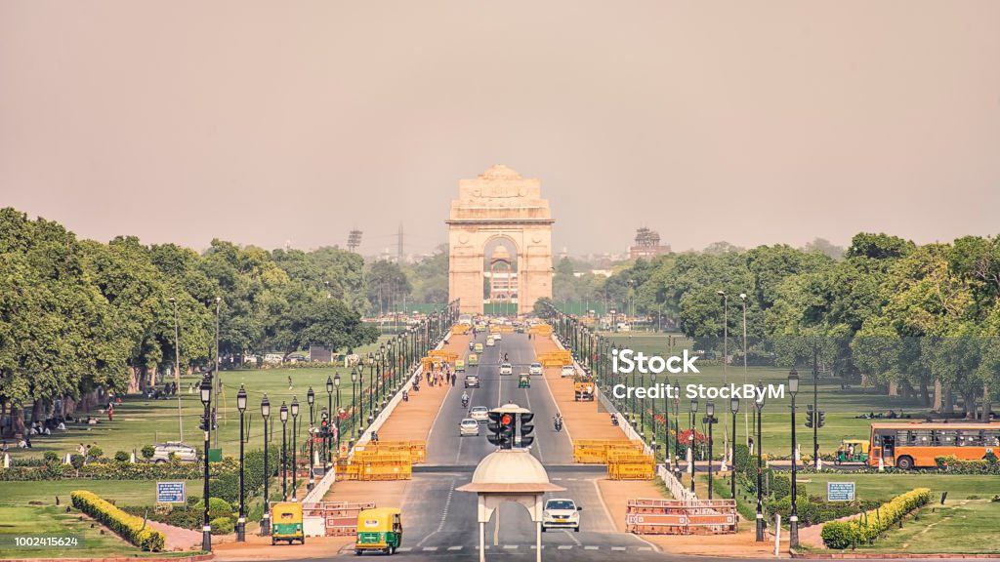
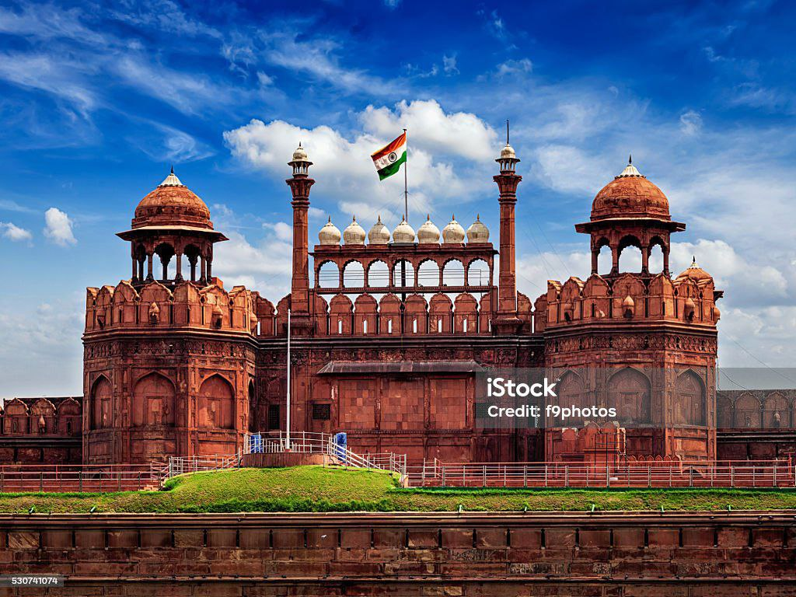

Much of New Delhi, planned by the leading 20th-century British architect Edwin Lutyens, was laid out to be the central administrative area of the city as a testament to Britain's imperial ambitions. New Delhi is structured around two central promenades called the Rajpath and the Janpath. The Rajpath, or King's Way, stretches from the Rashtrapati Bhavan to the India Gate. The Janpath (Hindi: "Path of the People"), formerly Queen's Way, begins at Connaught Circus and cuts the Rajpath at right angles. 19 foreign embassies are located on the nearby Shantipath (Hindi: "Path of Peace"), making it the largest diplomatic enclave in India. At the heart of the city is the magnificent Rashtrapati Bhavan (formerly known as Viceroy's House) which sits atop Raisina Hill. The Secretariat, which houses ministries of the government of India, flanks out of the Rashtrapati Bhavan. The Parliament House, designed by Herbert Baker, is located at the Sansad Marg, which runs parallel to the Rajpath. Connaught Place is a large, circular commercial area in New Delhi, modelled after the Royal Crescent in England. Twelve separate roads lead out of the outer ring of Connaught Place, one of them being the Janpath
|  |  |